if (!require(pacman)) install.packages("pacman")p_load(tidyverse, broom, modelsummary, marginaleffects, patchwork, ggridges, lmtest, optimizeR)
set.seed(1212)Counts as GLMs, overdispersion, expected and predicted values, and maximum likelihood estimation
Two new packages: ggridges draws several distributions on top of each other, and lmtest has a likelihood ratio test. We also call glm.nb() from MASS as MASS::glm.nb(), without loading the package, because loading it would mask dplyr::select().
if (!require(pacman)) install.packages("pacman")p_load(tidyverse, broom, modelsummary, marginaleffects, patchwork, ggridges, lmtest, optimizeR)
set.seed(1212)Last week’s model used 0/1 votes. Today the outcome is a count. MEPs usually vote with their group, so how often does an MEP break ranks? From the HowTheyVote.eu roll calls since July 2024 we drew 1,000 random votes per MEP from those they took part in, so that everybody had the same number of chances to rebel. We counted the votes that differed from the majority of their own group (abstaining is a position too): their rebellions. Non-attached MEPs have no group line and aren’t included, nor are MEPs with fewer than 1,000 votes or without a birth date.
Data source: HowTheyVote.eu (Open Database License).
group_labels <- tribble(
~ep_group, ~group_label,
"GUE_NGL", "The Left",
"GREEN_EFA", "Greens/EFA",
"SD", "S&D",
"RENEW", "Renew",
"EPP", "EPP",
"ECR", "ECR",
"PFE", "PfE",
"ESN", "ESN"
)
rebellions <- read_csv("data/ep_rebellions.csv") |>
mutate(ep_group = fct_relevel(ep_group, "EPP"))rebellions# A tibble: 587 × 6
member_id country ep_group age newcomer rebellions
<dbl> <chr> <fct> <dbl> <dbl> <dbl>
1 840 LUX RENEW 72.4 0 25
2 1909 DEU SD 68.7 0 23
3 1917 DEU EPP 59.5 0 28
4 1927 DEU EPP 59.2 0 22
5 2268 SWE GUE_NGL 59.6 1 179
6 2341 DEU EPP 64.2 0 21
7 4267 DEU SD 68.1 0 28
8 4289 DEU EPP 61.4 0 19
9 4395 ITA ECR 74 1 59
10 4746 ITA ECR 65 0 75
# ℹ 577 more rowsA first look at the counts:
rebellions |>
ggplot(aes(x = rebellions)) +
geom_histogram(binwidth = 10, fill = course_primary) +
labs(
title = "Rebellions per MEP in 1,000 votes",
x = "Rebellions",
y = "MEPs"
) +
theme_intror()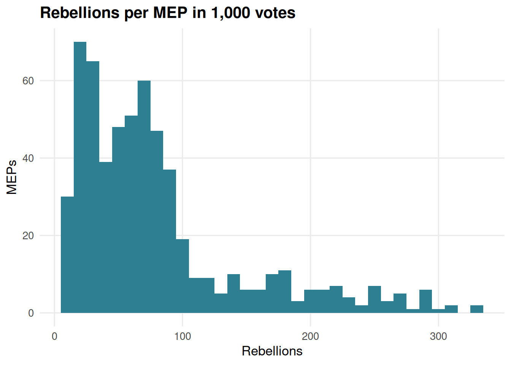
The average by group:
group_means <- rebellions |>
group_by(ep_group) |>
summarize(
meps = n(),
mean_rebellions = mean(rebellions)
) |>
left_join(group_labels, by = "ep_group") |>
arrange(desc(mean_rebellions)) |>
mutate(group_label = fct_inorder(group_label))
group_means# A tibble: 8 × 4
ep_group meps mean_rebellions group_label
<chr> <int> <dbl> <fct>
1 PFE 75 154. PfE
2 ECR 65 127. ECR
3 ESN 15 116 ESN
4 GUE_NGL 38 84.4 The Left
5 EPP 159 74.0 EPP
6 RENEW 66 52.5 Renew
7 SD 120 46.0 S&D
8 GREEN_EFA 49 37.5 Greens/EFA group_means |>
ggplot(aes(x = group_label, y = mean_rebellions)) +
geom_col(fill = course_primary) +
labs(
title = "Average rebellions by group",
x = NULL,
y = "Average rebellions"
) +
theme_intror()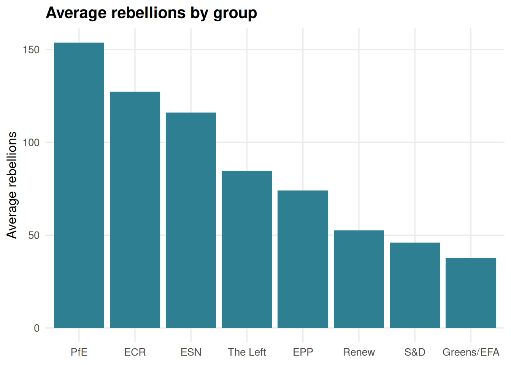
Our is a non-negative whole number. The predictors are as in OLS: age and the political group, with the EPP as the largest group for reference. As last week, the two tools we already have, OLS and a distribution that fits the outcome, each do only half of the job. A GLM combines them.
Quantity of interest (estimand): the expected number of rebellions of an MEP, given age and group.
The same model with one dummy per group, except for the reference group. The EPP has no dummy, so is its intercept, and each is a group’s difference from the EPP (in the sum above, ):
ols_model <- lm(rebellions ~ age + ep_group, data = rebellions)
ols_model |>
tidy()# A tibble: 9 × 5
term estimate std.error statistic p.value
<chr> <dbl> <dbl> <dbl> <dbl>
1 (Intercept) 84.6 11.6 7.27 0.00000000000118
2 age -0.204 0.207 -0.986 0.324
3 ep_groupECR 52.8 8.08 6.53 0.000000000143
4 ep_groupESN 40.8 14.8 2.75 0.00619
5 ep_groupGREEN_EFA -38.1 9.10 -4.19 0.0000327
6 ep_groupGUE_NGL 9.71 9.91 0.980 0.328
7 ep_groupPFE 79.2 7.69 10.3 0.0000000000000000000000570
8 ep_groupRENEW -21.9 8.03 -2.73 0.00648
9 ep_groupSD -28.2 6.63 -4.25 0.0000245 ols_sigma <- ols_model |>
glance() |>
pull(sigma)
ols_sigma[1] 54.75441As in Weeks 7 and 8, a predicted value adds a Normal error:
ols_values <- ols_model |>
augment() |>
mutate(predicted = .fitted + rnorm(n(), 0, ols_sigma))
ols_negative <- ols_values |>
summarize(share_negative = mean(predicted < 0)) |>
pull(share_negative)
ols_negative[1] 0.1243612ols_values |>
select(
Observed = rebellions,
`OLS predicted` = predicted
) |>
pivot_longer(everything(), names_to = "source", values_to = "count") |>
ggplot(aes(x = count, fill = source)) +
geom_histogram(binwidth = 10, boundary = 0, position = "identity", alpha = 0.4) +
geom_vline(xintercept = 0, linetype = "dashed", color = "grey50") +
scale_fill_manual(values = c(
"Observed" = "grey50",
"OLS predicted" = course_primary
)) +
labs(
title = "OLS on a count outcome",
x = "Rebellions",
y = "MEPs",
fill = NULL
) +
theme_intror()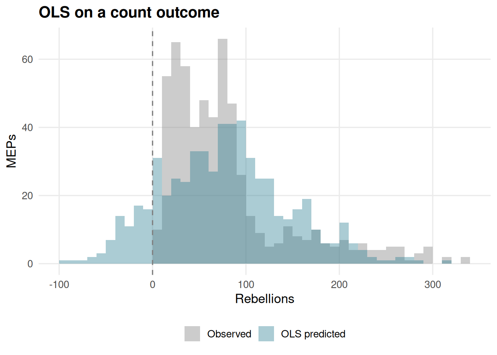
OLS uses the predictors, but it can’t produce counts. 12% of these MEPs would rebel a negative number of times, and none a whole number of times.
The other way around: a Poisson distribution produces only whole numbers from 0 upwards. One expected count for everybody, estimated by the mean:
lambda_hat <- rebellions |>
summarize(lambda_hat = mean(rebellions)) |>
pull(lambda_hat)
lambda_hat[1] 80.6644Draws from it are valid counts:
rpois(10, lambda = lambda_hat) [1] 88 81 78 76 87 79 78 80 93 68We could also give each group its own expected count, its mean:
one_poisson <- group_means |>
mutate(
panel = "One Poisson",
estimate = lambda_hat
)
group_poissons <- group_means |>
mutate(
panel = "One Poisson per group",
estimate = mean_rebellions
)
bind_rows(one_poisson, group_poissons) |>
mutate(position = as.numeric(group_label)) |>
ggplot(aes(x = group_label)) +
geom_point(aes(y = mean_rebellions, color = "Observed mean per group"), size = 3) +
geom_segment(
aes(x = position - 0.5, xend = position + 0.5, y = estimate, yend = estimate, color = "Estimated expected count"),
linewidth = 1
) +
facet_wrap(~panel) +
scale_x_discrete(guide = guide_axis(angle = 45)) +
scale_color_manual(values = c(
"Observed mean per group" = "grey50",
"Estimated expected count" = course_primary
)) +
labs(
title = "One Poisson vs. one Poisson per group",
x = NULL,
y = "Rebellions",
color = NULL
) +
theme_intror()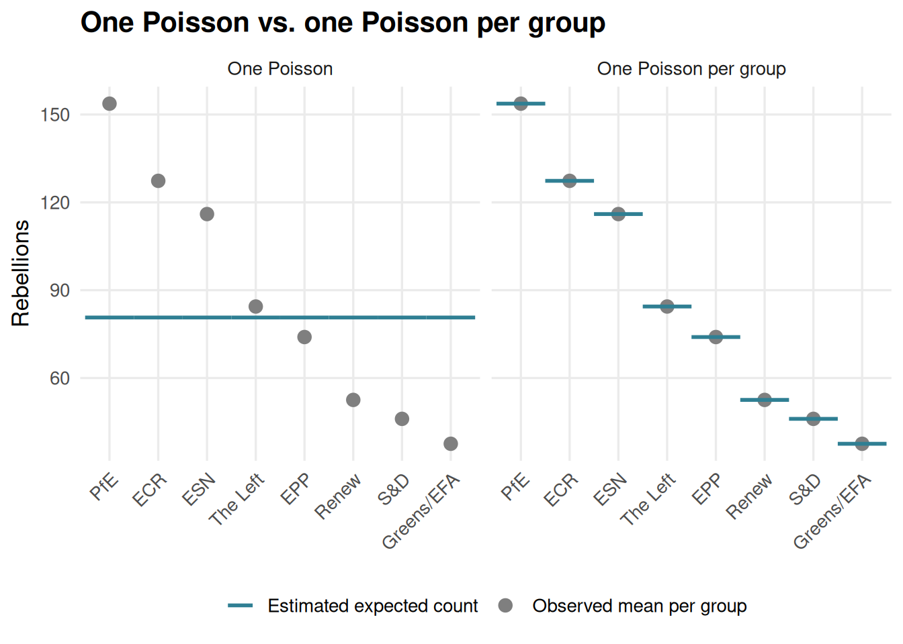
On the left, the outcome is right, but the predictors aren’t used at all: PfE and Greens/EFA get the same expected count. On the right, every group’s mean fits exactly, but this can’t use age or several predictors at once.
The GLM keeps the Poisson as the stochastic component, with a separate for every MEP, and the linear predictor  from OLS. can take any value, but must be positive. The exponential response function does this, as in the Poisson row of Week 11’s table:
from OLS. can take any value, but must be positive. The exponential response function does this, as in the Poisson row of Week 11’s table:
Since , the model gives an expected count.
g <- function(eta) {
exp(eta)
}
g(c(-2, 0, 2))[1] 0.1353353 1.0000000 7.3890561poisson_model <- glm(
rebellions ~ age + ep_group,
family = poisson(link = "log"),
data = rebellions
)
poisson_model |>
tidy()# A tibble: 9 × 5
term estimate std.error statistic p.value
<chr> <dbl> <dbl> <dbl> <dbl>
1 (Intercept) 4.43 0.0236 188. 0
2 age -0.00251 0.000419 -5.99 2.15e- 9
3 ep_groupECR 0.536 0.0144 37.2 1.99e-303
4 ep_groupESN 0.434 0.0258 16.8 1.44e- 63
5 ep_groupGREEN_EFA -0.699 0.0253 -27.6 5.70e-168
6 ep_groupGUE_NGL 0.123 0.0200 6.16 7.18e- 10
7 ep_groupPFE 0.725 0.0131 55.1 0
8 ep_groupRENEW -0.349 0.0194 -18.0 1.42e- 72
9 ep_groupSD -0.477 0.0163 -29.3 4.35e-188All three components in one picture:
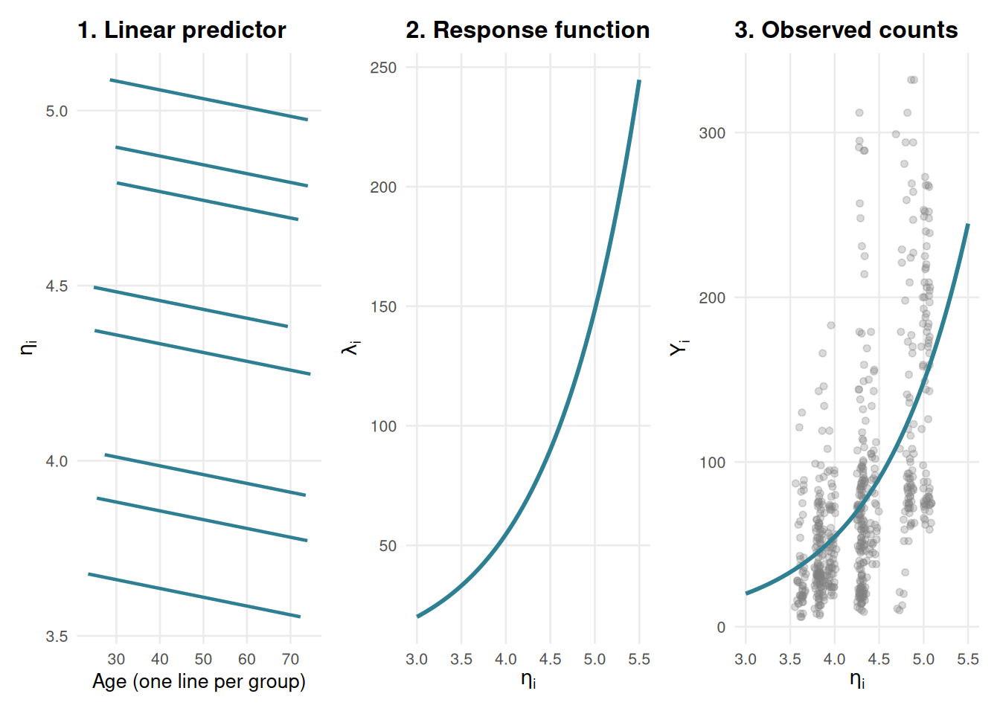
The linear predictor gives one straight line per group, the exponential function turns every into a positive , and the Poisson draws counts around it. The observed counts spread much more widely around the curve than a Poisson would, which we come back to below.
The coefficients are on the log scale. exponentiate = TRUE turns them into rate ratios: a factor on the expected number of rebellions (the rate per 1,000 votes), compared with the EPP for the groups and per year for age.
poisson_model |>
tidy(exponentiate = TRUE) |>
select(term, estimate)# A tibble: 9 × 2
term estimate
<chr> <dbl>
1 (Intercept) 84.3
2 age 0.997
3 ep_groupECR 1.71
4 ep_groupESN 1.54
5 ep_groupGREEN_EFA 0.497
6 ep_groupGUE_NGL 1.13
7 ep_groupPFE 2.06
8 ep_groupRENEW 0.706
9 ep_groupSD 0.620Why not for last week’s logit? There, exponentiate = TRUE runs too, but it gives odds ratios. With , a coefficient turns directly into a factor on the quantity we care about, the expected count:
One more year multiplies by , whatever the other predictors are. The logistic function doesn’t split up like this: is a factor on the odds , and what that does to  depends on where an MEP starts. So we read the logit through quantities of interest. Differences in expected counts still depend on the starting point here too, so we’ll also compute quantities of interest below.
depends on where an MEP starts. So we read the logit through quantities of interest. Differences in expected counts still depend on the starting point here too, so we’ll also compute quantities of interest below.
poisson_age <- poisson_model |>
tidy() |>
filter(term == "age")
poisson_age_z <- poisson_age |>
pull(statistic)
poisson_age_z[1] -5.986222Age looks highly significant here. We’ll see why not to trust this.
A Poisson has one parameter for both mean and variance:
If the model is right, the Pearson residuals have a variance of about 1, so their sum of squares divided by the residual degrees of freedom should be near 1:
poisson_df <- poisson_model |>
glance() |>
pull(df.residual)
dispersion <- poisson_model |>
augment(type.residuals = "pearson") |>
summarize(dispersion = sum(.resid^2) / poisson_df) |>
pull(dispersion)
dispersion[1] 34.12537The variance is about 34 times what the Poisson allows: overdispersion. MEPs of the same age and group still differ a lot, and some rebel far more than others. The estimates stay usable, but the standard errors are much too small.
The negative binomial counts all failures before the -th success in independent yes/no trials with success probability (playground: probabilityplayground.com/negativebinomial, which counts all trials up to the -th success, so its values are larger by ). For example, a candidate must collect supporter signatures to get on the ballot. They ask one person after another, and each signs with probability . How many people refuse before the fifth one signs? With ✓ for a signature and ✗ for a refusal, one possible sequence is
✗ ✓ ✓ ✗ ✗ ✓ ✓ ✓
The fifth signature comes from the eighth person, so refusals, wherever they fall before it.
It reads like the Binomial from Week 2: successes and failures have probability . The last trial must be the -th success, so the binomial coefficient counts the orders in which the failures can fall among the trials before it.
The variance is the mean divided by , so for it is larger than the mean. In R, is size and is prob:
signatures_needed <- 5
p_sign <- 0.5
dnbinom(3, size = signatures_needed, prob = p_sign) # exactly 3 refusals[1] 0.1367188rnbinom(10, size = signatures_needed, prob = p_sign) [1] 7 2 8 1 1 4 5 4 6 7Next to a Poisson with the same mean:
mean_refusals <- signatures_needed * (1 - p_sign) / p_sign
tibble(refusals = 0:20) |>
mutate(
`Negative binomial` = dnbinom(refusals, size = signatures_needed, prob = p_sign),
Poisson = dpois(refusals, lambda = mean_refusals)
) |>
pivot_longer(-refusals, names_to = "distribution", values_to = "probability") |>
ggplot(aes(x = refusals, y = probability, fill = distribution)) +
geom_col(position = "dodge") +
scale_fill_manual(values = c(
"Negative binomial" = course_primary,
"Poisson" = "darkorange"
)) +
labs(
title = "Refusals before the 5th signature",
x = "Refusals",
y = "Probability",
fill = NULL
) +
theme_intror()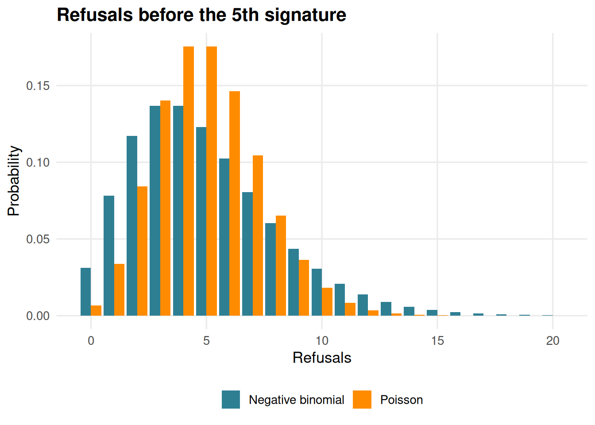
Same mean, but more spread. This is what the distribution is mostly used for: counts with more variation than a Poisson allows, even if there are no trials behind them. needn’t be a whole number then.
For a model we want the mean as a parameter, as in the Poisson, not and . So we set and choose such that the mean is :
It is the same distribution with other parameters. In R,  goes into
goes into size, where was, and into mu, which replaces prob. Our example has and . With the same seed, both forms give the same draws:
set.seed(1212)
rnbinom(10, size = signatures_needed, mu = mean_refusals) [1] 2 2 2 7 1 7 7 8 4 2set.seed(1212)
rnbinom(10, size = signatures_needed, prob = signatures_needed / (signatures_needed + mean_refusals)) [1] 2 2 2 7 1 7 7 8 4 2Now the model. The mean part stays as it was:
lets the variance grow faster than the mean. The smaller , the more overdispersion. As grows, we are back at the Poisson.
Is this still a GLM? Only with known. Our definition allows an extra parameter like , which just scales the variance, so can be estimated without it. sits inside the variance function, so  depends on it. Since we estimate , the mean part is a GLM, and is an extra parameter outside the framework. That is why
depends on it. Since we estimate , the mean part is a GLM, and is an extra parameter outside the framework. That is why glm() can’t fit it: MASS::glm.nb() alternates between the two steps.
nb_model <- MASS::glm.nb(
rebellions ~ age + ep_group,
data = rebellions
)
nb_model |>
tidy()# A tibble: 9 × 5
term estimate std.error statistic p.value
<chr> <dbl> <dbl> <dbl> <dbl>
1 (Intercept) 4.48 0.132 33.9 2.34e-252
2 age -0.00329 0.00235 -1.40 1.61e- 1
3 ep_groupECR 0.531 0.0909 5.84 5.20e- 9
4 ep_groupESN 0.433 0.167 2.60 9.42e- 3
5 ep_groupGREEN_EFA -0.704 0.104 -6.76 1.36e- 11
6 ep_groupGUE_NGL 0.123 0.112 1.10 2.71e- 1
7 ep_groupPFE 0.725 0.0864 8.39 4.85e- 17
8 ep_groupRENEW -0.350 0.0913 -3.83 1.26e- 4
9 ep_groupSD -0.481 0.0754 -6.38 1.75e- 10theta_hat <- nb_model |>
pluck("theta")
theta_hat[1] 2.703534nb_age_z <- nb_model |>
tidy() |>
filter(term == "age") |>
pull(statistic) |>
as.numeric()
nb_age_z[1] -1.402881Both models side by side:
modelsummary(
list("Poisson" = poisson_model, "Negative binomial" = nb_model),
output = "tinytable",
coef_map = c(
"age" = "Age",
"ep_groupGUE_NGL" = "The Left",
"ep_groupGREEN_EFA" = "Greens/EFA",
"ep_groupSD" = "S&D",
"ep_groupRENEW" = "Renew",
"ep_groupECR" = "ECR",
"ep_groupPFE" = "PfE",
"ep_groupESN" = "ESN",
"(Intercept)" = "Intercept"
),
stars = TRUE,
gof_map = c("nobs", "logLik", "aic"),
fmt = 3
)| Poisson | Negative binomial | |
|---|---|---|
| + p < 0.1, * p < 0.05, ** p < 0.01, *** p < 0.001 | ||
| Age | -0.003*** | -0.003 |
| (0.000) | (0.002) | |
| The Left | 0.123*** | 0.123 |
| (0.020) | (0.112) | |
| Greens/EFA | -0.699*** | -0.704*** |
| (0.025) | (0.104) | |
| S&D | -0.477*** | -0.481*** |
| (0.016) | (0.075) | |
| Renew | -0.349*** | -0.350*** |
| (0.019) | (0.091) | |
| ECR | 0.536*** | 0.531*** |
| (0.014) | (0.091) | |
| PfE | 0.725*** | 0.725*** |
| (0.013) | (0.086) | |
| ESN | 0.434*** | 0.433** |
| (0.026) | (0.167) | |
| Intercept | 4.435*** | 4.475*** |
| (0.024) | (0.132) | |
| Num.Obs. | 587 | 587 |
| Log.Lik. | -10411.990 | -2987.618 |
| AIC | 20842.0 | 5995.2 |
The coefficients with their 95% confidence intervals make the difference visible. A single year of age is a small step, so we show age per 10 years:
age_step <- 10
poisson_coef <- poisson_model |>
tidy(conf.int = TRUE) |>
mutate(model = "Poisson")
nb_coef <- nb_model |>
tidy(conf.int = TRUE) |>
mutate(
model = "Negative binomial",
statistic = as.numeric(statistic)
)
model_coefs <- bind_rows(poisson_coef, nb_coef) |>
filter(term != "(Intercept)") |>
mutate(
ep_group = str_remove(term, "ep_group"),
step = if_else(term == "age", age_step, 1),
estimate = estimate * step,
lower = conf.low * step,
upper = conf.high * step
) |>
left_join(group_labels, by = "ep_group") |>
mutate(
label = coalesce(group_label, "Age (10 years)"),
label = fct_reorder(label, estimate)
) |>
select(model, label, estimate, lower, upper)
model_coefs# A tibble: 16 × 5
model label estimate lower upper
<chr> <fct> <dbl> <dbl> <dbl>
1 Poisson Age (10 years) -0.0251 -0.0333 -0.0169
2 Poisson ECR 0.536 0.508 0.564
3 Poisson ESN 0.434 0.384 0.485
4 Poisson Greens/EFA -0.699 -0.749 -0.650
5 Poisson The Left 0.123 0.0838 0.162
6 Poisson PfE 0.725 0.699 0.751
7 Poisson Renew -0.349 -0.387 -0.311
8 Poisson S&D -0.477 -0.509 -0.445
9 Negative binomial Age (10 years) -0.0329 -0.0785 0.0127
10 Negative binomial ECR 0.531 0.355 0.712
11 Negative binomial ESN 0.433 0.120 0.775
12 Negative binomial Greens/EFA -0.704 -0.906 -0.497
13 Negative binomial The Left 0.123 -0.0915 0.347
14 Negative binomial PfE 0.725 0.557 0.896
15 Negative binomial Renew -0.350 -0.527 -0.169
16 Negative binomial S&D -0.481 -0.629 -0.333 model_coefs |>
ggplot(aes(x = estimate, y = label, color = model)) +
geom_vline(xintercept = 0, linetype = "dashed", color = "grey50") +
geom_pointrange(
aes(xmin = lower, xmax = upper),
position = position_dodge(width = 0.6)
) +
scale_color_manual(values = c(
"Negative binomial" = course_primary,
"Poisson" = "darkorange"
)) +
labs(
title = "Coefficients, Poisson vs. negative binomial",
x = "Coefficient (log scale), EPP as reference",
y = NULL,
color = NULL
) +
theme_intror()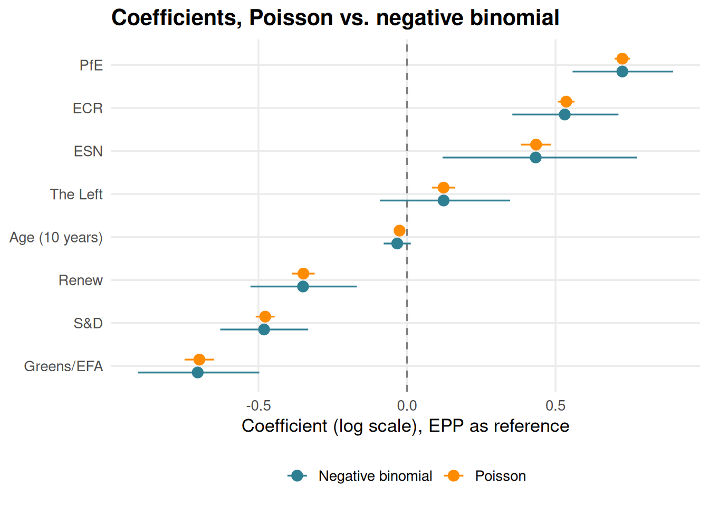
The estimates are similar, the standard errors are not. Age’s shrinks from -6 to -1.4: with the overdispersion modelled, there is no clear age effect left. The same goes for the Left’s difference from the EPP: its interval now includes 0 as well.
Similar coefficients also mean similar expected values. Here is for each MEP under both models, from predict(), since broom doesn’t maintain augment() for glm.nb() models, next to the observed counts:
expected_values <- rebellions |>
mutate(
Observed = rebellions,
Poisson = predict(poisson_model, type = "response"),
`Negative binomial` = predict(nb_model, type = "response")
) |>
pivot_longer(
c(Observed, Poisson, `Negative binomial`),
names_to = "source",
values_to = "count"
) |>
mutate(source = fct_relevel(source, "Poisson", "Negative binomial", "Observed"))expected_values |>
ggplot(aes(x = count, y = source, fill = source)) +
geom_density_ridges(alpha = 0.7, bandwidth = 4, scale = 0.95, from = 0) +
scale_fill_manual(values = c(
"Observed" = "grey50",
"Negative binomial" = course_primary,
"Poisson" = "darkorange"
)) +
labs(
title = "Observed and expected rebellions, one per MEP",
x = "Rebellions",
y = NULL
) +
theme_intror() +
theme(legend.position = "none")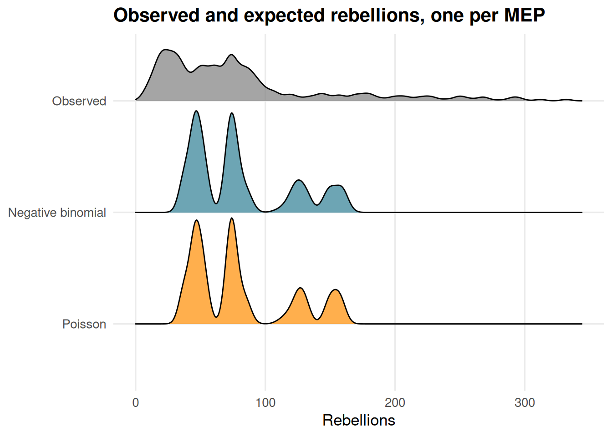
The two models are almost the same: they agree on the means, with one bump per group or two. The observed counts spread much more, since each MEP varies around their own mean. The models differ in how much the counts vary around these means. qpois() and qnbinom() give the range in which each model expects 95% of the counts, here for an MEP of average age in each group:
average_age <- rebellions |>
summarize(mean(age)) |>
pull()
group_scenario <- group_labels |>
mutate(age = average_age)
poisson_ranges <- group_scenario |>
mutate(
model = "Poisson",
expected = predict(poisson_model, newdata = group_scenario, type = "response"),
lower = qpois(0.025, lambda = expected),
upper = qpois(0.975, lambda = expected)
)
nb_ranges <- group_scenario |>
mutate(
model = "Negative binomial",
expected = predict(nb_model, newdata = group_scenario, type = "response"),
lower = qnbinom(0.025, size = theta_hat, mu = expected),
upper = qnbinom(0.975, size = theta_hat, mu = expected)
)
count_ranges <- bind_rows(poisson_ranges, nb_ranges) |>
mutate(
model = fct_relevel(model, "Poisson"),
group_label = fct_reorder(group_label, expected)
)
count_ranges |>
select(model, group_label, expected, lower, upper)# A tibble: 16 × 5
model group_label expected lower upper
<fct> <fct> <dbl> <dbl> <dbl>
1 Poisson The Left 84.1 67 103
2 Poisson Greens/EFA 37.0 26 49
3 Poisson S&D 46.1 33 60
4 Poisson Renew 52.5 39 67
5 Poisson EPP 74.4 58 92
6 Poisson ECR 127. 105 150
7 Poisson PfE 154. 130 178
8 Poisson ESN 115. 94 136
9 Negative binomial The Left 84.3 14 212
10 Negative binomial Greens/EFA 36.8 6 94
11 Negative binomial S&D 46.0 7 117
12 Negative binomial Renew 52.5 9 133
13 Negative binomial EPP 74.5 13 188
14 Negative binomial ECR 127. 22 318
15 Negative binomial PfE 154. 27 386
16 Negative binomial ESN 115. 20 289observed_counts <- rebellions |>
left_join(group_labels, by = "ep_group")
count_ranges |>
ggplot(aes(y = group_label)) +
geom_jitter(
data = observed_counts,
aes(x = rebellions),
height = 0.2,
width = 0,
alpha = 0.25,
color = "grey50"
) +
geom_pointrange(
aes(x = expected, xmin = lower, xmax = upper, color = model),
linewidth = 1
) +
facet_wrap(~model) +
scale_color_manual(values = c(
"Negative binomial" = course_primary,
"Poisson" = "darkorange"
)) +
labs(
title = "Same mean, different spread",
x = "Rebellions",
y = NULL
) +
theme_intror() +
theme(legend.position = "none")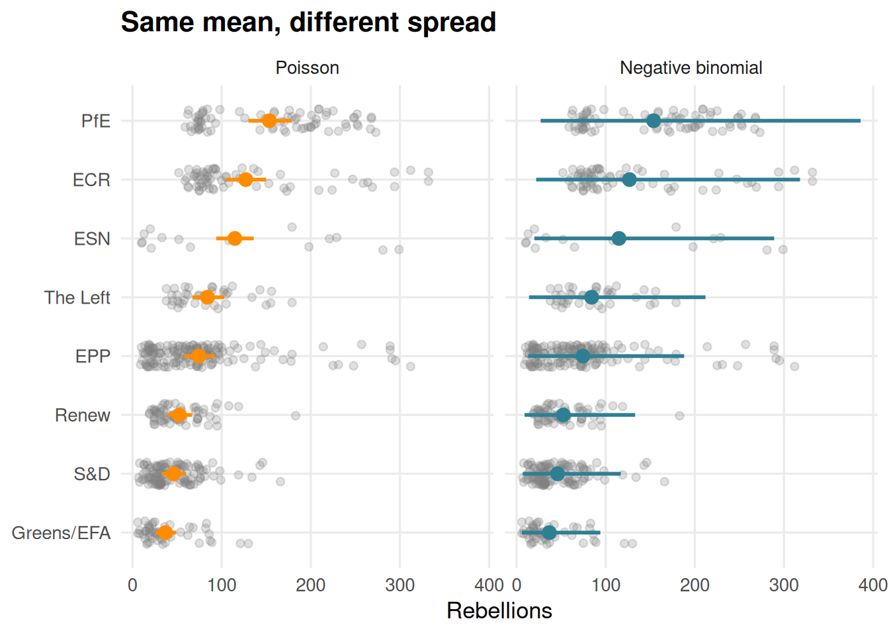
How many observed counts fall into these ranges, taken at each MEP’s own age and group?
count_coverage <- rebellions |>
mutate(
expected_poisson = predict(poisson_model, type = "response"),
expected_nb = predict(nb_model, type = "response")
) |>
summarize(
poisson = mean(
rebellions >= qpois(0.025, lambda = expected_poisson) &
rebellions <= qpois(0.975, lambda = expected_poisson)
),
nb = mean(
rebellions >= qnbinom(0.025, size = theta_hat, mu = expected_nb) &
rebellions <= qnbinom(0.975, size = theta_hat, mu = expected_nb)
)
)
count_coverage# A tibble: 1 × 2
poisson nb
<dbl> <dbl>
1 0.266 0.954Grey points are the observed MEPs. The large dots, the expected values, hardly differ between the models, but the lines do. Only 27% of the observed counts lie in the Poisson’s range, against 95% for the negative binomial. The Poisson takes the counts to be closer to the mean than they are, so it is also too certain about the coefficients. The lines aren’t confidence intervals as in the coefficient plot: they show the spread of the counts, with the estimates taken as known.
Are we right to prefer the negative binomial? The Poisson is its limit as goes to infinity, so the two are nested, at least approximately. The likelihood ratio compares the restricted model R with the unrestricted model U:
The negative binomial has one parameter more, so there is one degree of freedom. The null hypothesis is that the Poisson is enough:
loglik_poisson <- poisson_model |>
glance() |>
pull(logLik) |>
as.numeric()
loglik_nb <- nb_model |>
glance() |>
pull(logLik) |>
as.numeric()
lr <- 2 * (loglik_nb - loglik_poisson)
lr[1] 14848.74critical_value <- qchisq(0.95, df = 1)
critical_value[1] 3.841459tibble(x = seq(0, 10, by = 0.05)) |>
mutate(density = dchisq(x, df = 1)) |>
ggplot(aes(x = x, y = density)) +
geom_line(aes(color = "Chi-squared, 1 df"), linewidth = 1) +
geom_vline(aes(xintercept = critical_value, color = "Critical value"), linetype = "dashed") +
scale_color_manual(values = c(
"Chi-squared, 1 df" = course_primary,
"Critical value" = "darkorange"
)) +
coord_cartesian(ylim = c(0, 1)) +
labs(
title = "Null distribution of the likelihood ratio",
x = "LR",
y = "Density",
color = NULL
) +
theme_intror()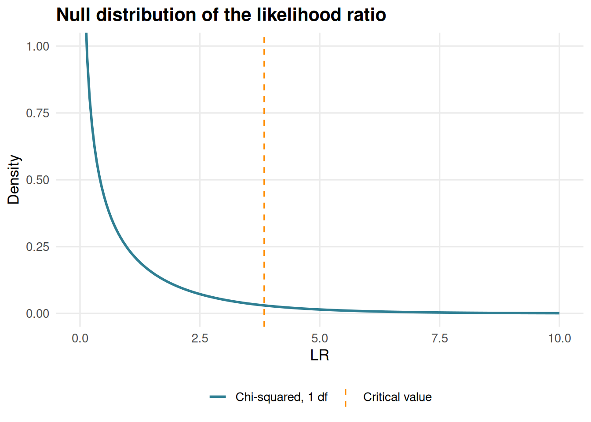
The shortcut is lrtest() from lmtest, which takes both models, the restricted one first:
lrtest(poisson_model, nb_model)Likelihood ratio test
Model 1: rebellions ~ age + ep_group
Model 2: rebellions ~ age + ep_group
#Df LogLik Df Chisq Pr(>Chisq)
1 9 -10412.0
2 10 -2987.6 1 14849 < 0.00000000000000022 ***
---
Signif. codes: 0 '***' 0.001 '**' 0.01 '*' 0.05 '.' 0.1 ' ' 1Chisq is our LR, with Df = 1. anova() doesn’t work for this pair: it compares deviances and ignores as a parameter.
Our LR of 14849 lies far off this plot, so we reject the null hypothesis at : the data clearly favour the negative binomial. The model table’s AIC, , says the same: lower is better, and it penalizes the extra parameter.
The same building blocks as in Weeks 10 and 11. We take the simplest model, age only. The Poisson likelihood:
and its log:
x_beta <- function(theta, age) {
pluck(theta, 1) + pluck(theta, 2) * age
}
l <- function(theta, y, age, log = FALSE) {
dpois(y, lambda = g(x_beta(theta, age)), log = log)
}
ll <- function(theta, y, age) {
sum(l(theta, y, age, log = TRUE))
}rebellion_counts <- rebellions |>
pull(rebellions)
age_values <- rebellions |>
pull(age)As starting values, the log of the mean count for the intercept and 0 for age:
mean_count <- rebellions |>
summarize(mean(rebellions)) |>
pull()
start_poisson <- c(log(mean_count), 0)
ll(start_poisson, rebellion_counts, age_values)[1] -15414.36optimizer <- Optimizer$new(which = "stats::nlminb")
fit_raw <- optimizer$maximize(
objective = ll,
initial = start_poisson,
y = rebellion_counts,
age = age_values
)
fit_raw |>
pluck("convergence")[1] 1A convergence code other than 0 means the optimizer stopped without reaching the top, so we can’t trust its result. Age is far from 0 for everybody, which makes intercept and slope pull against each other on a very steep hill. Centering age removes that. It changes the intercept’s meaning to an MEP of average age, not the slope:
rebellions_centered <- rebellions |>
mutate(age_centered = age - mean(age))
age_centered_values <- rebellions_centered |>
pull(age_centered)The model equations. We subtract the mean age, and the intercept gets a new name, :
Multiplying out shows that it is the same model with another intercept:
So . The slope , the expected counts and the maximum of the likelihood stay the same.
Why it is often used:
In the Bayesian world. A Bayesian model multiplies the likelihood by priors, our beliefs about the parameters before seeing the data, to get the posterior.
fit_poisson <- optimizer$maximize(
objective = ll,
initial = start_poisson,
y = rebellion_counts,
age = age_centered_values
)
fit_poisson |>
pluck("convergence")[1] 0theta_poisson <- fit_poisson |>
pluck("parameter")
theta_poisson[1] 4.389918384 -0.002471952Don’t confuse them:
in NegBinAlt is a single number, the parameter for the overdispersion. In R it is the size argument, and our estimates of it are theta_hat and nb_theta.theta in l(), ll() and x_beta() is the vector of all parameters the optimizer searches over, as in Weeks 10 and 11. The results theta_poisson and theta_nb are such vectors.They meet in the negative binomial: the third entry of the vector theta is the log of NegBinAlt’s , so exp(pluck(theta, 3)) goes into size.
For the negative binomial, only l() changes: dnbinom() replaces dpois(), and becomes a third parameter, estimated together with . As with  in Week 10, we estimate its log to keep it positive. The likelihood and its log:
in Week 10, we estimate its log to keep it positive. The likelihood and its log:
l <- function(theta, y, age, log = FALSE) {
dnbinom(y, mu = g(x_beta(theta, age)), size = exp(pluck(theta, 3)), log = log)
}ll() looks up l() when it runs, so it doesn’t need rewriting:
fit_nb_ml <- optimizer$maximize(
objective = ll,
initial = c(start_poisson, 0),
y = rebellion_counts,
age = age_centered_values
)
fit_nb_ml |>
pluck("convergence")[1] 0theta_nb <- fit_nb_ml |>
pluck("parameter")
theta_nb[1] 4.389919697 -0.002462324 0.586122273Our estimates next to glm() and MASS::glm.nb():
poisson_age_only <- glm(
rebellions ~ age_centered,
family = poisson(link = "log"),
data = rebellions_centered
)
nb_age_only <- MASS::glm.nb(
rebellions ~ age_centered,
data = rebellions_centered
)
poisson_coefs <- poisson_age_only |>
tidy() |>
pull(estimate)
nb_coefs <- nb_age_only |>
tidy() |>
pull(estimate)
nb_theta <- nb_age_only |>
pluck("theta")
tibble(
parameter = c("beta_0", "beta_age", "theta"),
poisson_ml = c(theta_poisson, NA),
poisson_glm = c(poisson_coefs, NA),
nb_ml = c(pluck(theta_nb, 1), pluck(theta_nb, 2), exp(pluck(theta_nb, 3))),
nb_glm = c(nb_coefs, nb_theta)
)# A tibble: 3 × 5
parameter poisson_ml poisson_glm nb_ml nb_glm
<chr> <dbl> <dbl> <dbl> <dbl>
1 beta_0 4.39 4.39 4.39 4.39
2 beta_age -0.00247 -0.00247 -0.00246 -0.00246
3 theta NA NA 1.80 1.80 The two models as a table:
modelsummary(
list("Poisson" = poisson_age_only, "Negative binomial" = nb_age_only),
output = "tinytable",
coef_map = c(
"age_centered" = "Age (centered)",
"(Intercept)" = "Intercept"
),
stars = TRUE,
gof_map = c("nobs", "logLik", "aic"),
fmt = 4
)| Poisson | Negative binomial | |
|---|---|---|
| + p < 0.1, * p < 0.05, ** p < 0.01, *** p < 0.001 | ||
| Age (centered) | -0.0025*** | -0.0025 |
| (0.0004) | (0.0028) | |
| Intercept | 4.3899*** | 4.3899*** |
| (0.0046) | (0.0311) | |
| Num.Obs. | 587 | 587 |
| Log.Lik. | -15396.416 | -3118.723 |
| AIC | 30796.8 | 6243.4 |
The estimates agree again, and only the standard errors differ.
Maximum likelihood doesn’t care whether a model is a GLM: the negative binomial’s is one more entry in the parameter vector.
Quantity of interest (estimand): the expected number of rebellions, . A predicted value is a quantity of interest, but not an estimand in this sense: it aims at a single MEP’s count.
As for the logit, the systematic part gives the expected value and a draw from the stochastic component the predicted value:
We take the expected values from predict() again. rnbinom() takes the mean as mu and as size. The same draws from the Poisson show what it misses:
count_values <- rebellions |>
mutate(
expected = predict(nb_model, type = "response"),
predicted_nb = rnbinom(n(), size = theta_hat, mu = expected),
predicted_poisson = rpois(n(), lambda = expected)
)
count_values |>
select(rebellions, expected, predicted_nb, predicted_poisson)# A tibble: 587 × 4
rebellions expected predicted_nb predicted_poisson
<dbl> <dbl> <dbl> <int>
1 25 48.8 26 49
2 23 43.3 41 45
3 28 72.2 55 73
4 22 72.3 50 66
5 179 81.7 81 90
6 21 71.1 48 69
7 28 43.4 43 41
8 19 71.8 38 61
9 59 117. 47 119
10 75 121. 79 126
# ℹ 577 more rowscount_values |>
select(
Observed = rebellions,
`Negative binomial` = predicted_nb,
Poisson = predicted_poisson
) |>
pivot_longer(everything(), names_to = "source", values_to = "count") |>
mutate(source = fct_relevel(source, "Poisson", "Negative binomial", "Observed")) |>
ggplot(aes(x = count, y = source, fill = source)) +
geom_density_ridges(alpha = 0.7, bandwidth = 8, scale = 0.95, from = 0) +
scale_fill_manual(values = c(
"Observed" = "grey50",
"Negative binomial" = course_primary,
"Poisson" = "darkorange"
)) +
labs(
title = "Observed and predicted rebellions",
x = "Rebellions",
y = NULL,
fill = NULL
) +
theme_intror() +
theme(legend.position = "none")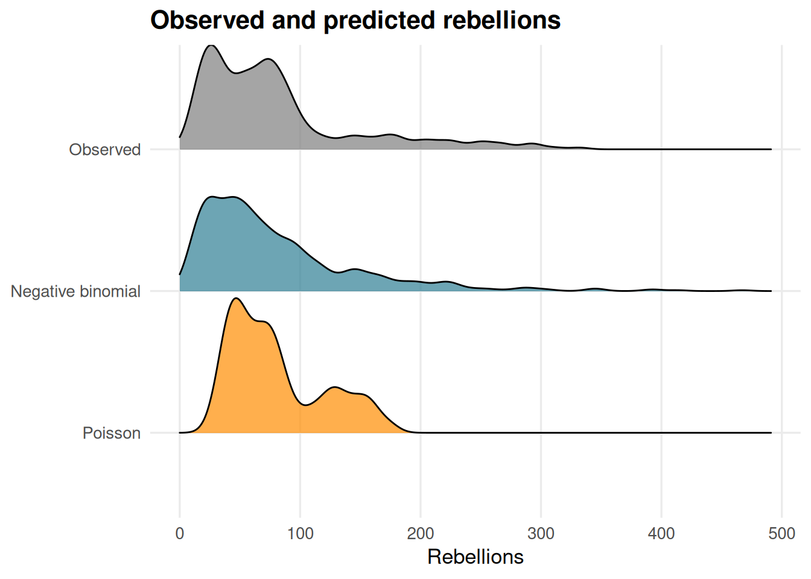
The negative binomial’s predicted values spread like the observed counts. The Poisson’s stay close to their expected values.
marginaleffects
predictions() returns the same expected values as predict(), one per MEP, and inferences() adds a bootstrap confidence interval to each:
predictions(nb_model) |>
inferences(method = "boot", R = 1000)Where each tool gives which:
| Expected value | Predicted value | |
|---|---|---|
predict() (base R) |
predict(model, newdata, type = "response") |
single draws: rnbinom(n(), size = theta, mu = expected) |
augment() |
Poisson only: column .fitted with type.predict = "response" |
no built-in way |
marginaleffects |
predictions(), on the response scale by default |
no built-in way |
Quantity of interest (estimand): the expected rebellions of an MEP of average age in the S&D, the EPP and PfE, and the first difference between a 40-year-old and a 70-year-old in the EPP.
As last week, predictions() and comparisons() compute the quantities, and inferences() adds the bootstrap. The scenario:
n_boot <- 1000
age_mean <- rebellions |>
summarize(mean(age)) |>
pull()
age_mean[1] 50.03288age_young <- 40
age_old <- 70The expected rebellions come from the response function:
ev_boot <- predictions(
nb_model,
newdata = datagrid(
ep_group = c("EPP", "SD", "PFE"),
age = age_mean
)
) |>
inferences(method = "boot", R = n_boot)
ev_boot
ep_group age Estimate 2.5 % 97.5 %
EPP 50 74.5 65.9 84.7
PFE 50 153.8 139.0 169.6
SD 50 46.0 40.8 50.9
Type: invlink(link)The first difference between a 70- and a 40-year-old in the EPP:
fd_boot <- comparisons(
nb_model,
variables = list(age = c(age_young, age_old)),
newdata = datagrid(ep_group = "EPP")
) |>
inferences(method = "boot", R = n_boot)
fd_boot
ep_group Estimate 2.5 % 97.5 %
EPP -7.24 -19 4.25
Term: age
Type: response
Comparison: 70 - 40fd_summary <- fd_boot |>
as_tibble()
fd_estimate <- fd_summary |>
pull(estimate)
fd_lower <- fd_summary |>
pull(conf.low)
fd_upper <- fd_summary |>
pull(conf.high)get_draws() gives each bootstrap sample’s expected values:
ev_draws <- ev_boot |>
get_draws() |>
as_tibble() |>
left_join(group_labels, by = "ep_group") |>
select(group_label, draw)
ev_draws# A tibble: 3,000 × 2
group_label draw
<chr> <dbl>
1 EPP 68.6
2 PfE 148.
3 S&D 47.0
4 EPP 74.2
5 PfE 155.
6 S&D 46.4
7 EPP 63.6
8 PfE 157.
9 S&D 47.8
10 EPP 69.1
# ℹ 2,990 more rowsev_draws |>
mutate(group_label = fct_relevel(group_label, "S&D", "EPP", "PfE")) |>
ggplot(aes(x = draw, y = group_label, fill = group_label)) +
geom_density_ridges(alpha = 0.7, bandwidth = 2) +
scale_fill_manual(values = c(
"S&D" = course_primary,
"EPP" = "grey50",
"PfE" = "darkorange"
)) +
labs(
title = "Expected rebellions by group",
x = "Expected rebellions",
y = NULL,
fill = NULL
) +
theme_intror()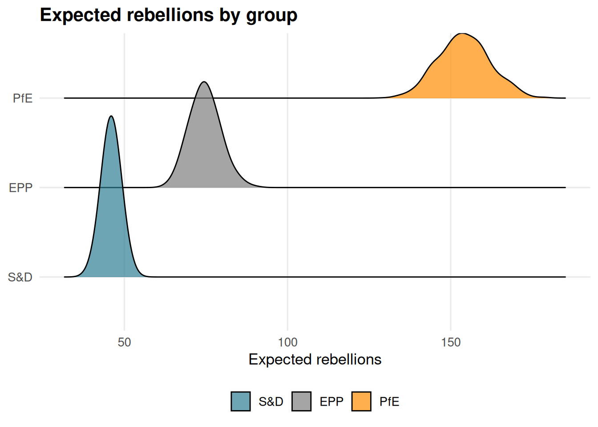
The groups differ clearly in expected rebellions. The first difference by age is -7 rebellions, with a 95% interval from -19 to 4, which includes zero. This is a description of MEPs, not the effect of ageing.
Quantity of interest: the rebellions of a single new EPP MEP. Each bootstrap draw of the expected value feeds one draw from the negative binomial, with from the model:
boot_pvs <- ev_draws |>
filter(group_label == "EPP") |>
mutate(predicted = rnbinom(n(), size = theta_hat, mu = draw))ev_pv <- boot_pvs |>
pivot_longer(c(draw, predicted), names_to = "type", values_to = "value") |>
mutate(
type = if_else(
type == "draw",
"Expected value: estimation uncertainty",
"Predicted value: estimation + fundamental uncertainty"
)
)
ev_pv |>
group_by(type) |>
summarize(
estimate = mean(value),
lower = quantile(value, 0.025),
upper = quantile(value, 0.975)
)# A tibble: 2 × 4
type estimate lower upper
<chr> <dbl> <dbl> <dbl>
1 Expected value: estimation uncertainty 74.7 66.2 84.6
2 Predicted value: estimation + fundamental uncertainty 75.7 13 183. ev_pv |>
ggplot(aes(x = value)) +
geom_histogram(binwidth = 5, fill = course_primary) +
facet_wrap(~type, ncol = 1, scales = "free_y") +
labs(
title = "Expected and predicted rebellions, EPP",
x = "Rebellions",
y = "Bootstrap samples"
) +
theme_intror()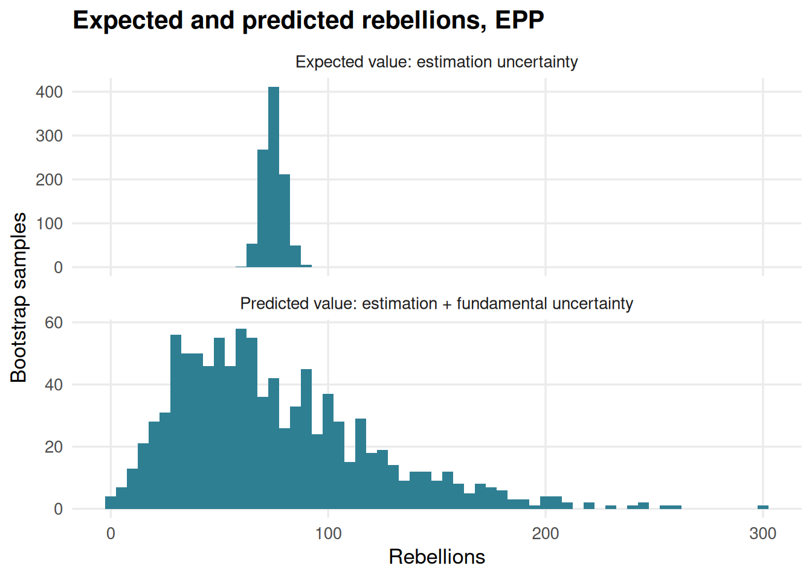
We know the average EPP MEP’s rebellions quite well, but a single MEP can land almost anywhere. Unlike for a 0/1 outcome, an interval for a predicted count is informative again.
Counts need a distribution for counts and a response function that stays positive: a Poisson with exp(). Real counts are often more spread out than a Poisson allows, and ignoring that makes standard errors far too small. The negative binomial fixes this with one extra parameter. The quantities of interest came from the same bootstrap as before, and the same l(), ll(), g() and x_beta() estimated all models of the last three weeks.
Do MEPs who are new to Parliament follow their group more closely, or are they less socialized into group discipline? newcomer is 1 for MEPs who weren’t part of the 2019–2024 Parliament.
Your task: add newcomer to the negative binomial model. Report its rate ratio with a 95% confidence interval, and what happens to the age coefficient.
# A tibble: 2 × 7
term estimate std.error statistic p.value conf.low conf.high
<chr> <dbl> <dbl> <dbl> <dbl> <dbl> <dbl>
1 age 0.997 0.00237 -1.06 0.289 0.993 1.00
2 newcomer 1.12 0.0532 2.13 0.0330 1.01 1.24Renew sits in the centre, the ECR on the right. Does that go along with different levels of group discipline?
Your task: report the first difference in expected rebellions between the ECR and Renew, for an MEP of average age, with a 95% bootstrap interval.
ep_group age Estimate 2.5 % 97.5 %
EPP 50 74.2 52.7 94.8
Term: ep_group
Type: response
Comparison: ECR - RENEW